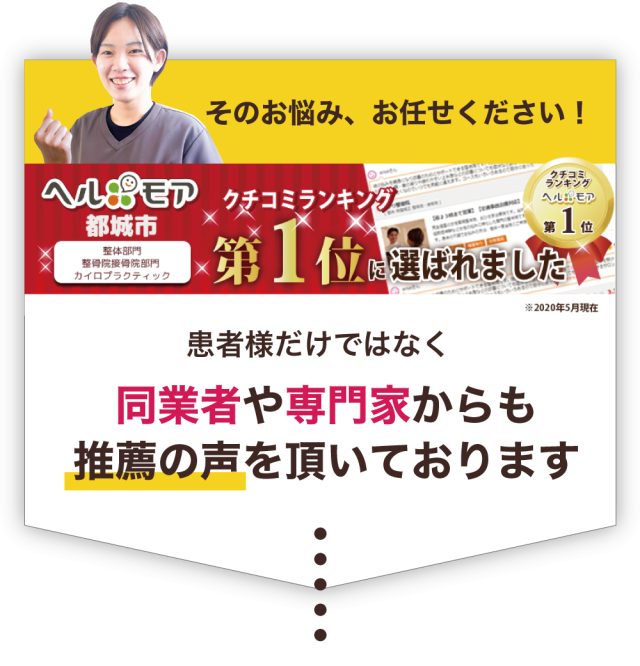

こんなお悩みはありませんか？
- ひどい肩こりをなんとかしたい
- めまいや、耳鳴り、頭痛など不快な症状が続く
- 朝から体が疲れている
- 痛み止めが週に３回以上使うことがある
- 病院では異常が無いと言われた
- 片頭痛持ちの体質を改善したい
- 原因不明の不調が続いている
▼
安心してください！
そのつらい症状、
当院が改善に導きます
当院は原因不明の症状や、なかなか改善しない症状の主な原因は、
- 体液循環不足
- 内臓疲労
- 間違った体の使い方
と考えています。

すべての不調に影響する自律神経を整えます。
自律神経が整っていると、私たちに元々備わっている自然治癒力が正常に働いてくれます。
それにより睡眠の質が向上し、寝ている間に身体は自ら不調がある部分を修復してくれるようになり、痛みや不調が改善されていきます。
血液やリンパ液などの体液の巡りを促進します。
全身の細胞にエネルギー源となる栄養素や酸素を届ける血液やリンパ液などの「体液」の巡りを促進する施術を行います。
体液循環が整うと、カラダに必要なものをしっかりと細胞に届けることができ、逆にカラダに必要のない不純物や老廃物を体外に排出することができ、回復が促進されます。
不調の原因の一つとなる内臓機能を整えます。
健康診断の数値は問題ないから大丈夫！そう思っていませんか？内臓は相当悪化をしてからでないと数値として現れません。
胃腸器が弱っていても腰痛や肩こりなどが起きやすく、ホルモンを司る臓器が弱ると自律神経の乱れなどを引き起こすくなります。当院では内臓機能が向上するよう施術で整えていきます。
正しい動きが出来るよう整えます。
体の正しい使い方は学校で習う事がありません。「丹田を意識する」「体の重心を感じる」など日頃から意識しない部分がとても大切です。
これが出来ないと重たい荷物で腰を壊したり、腱鞘炎が起きたりと不具合が多くなります。上記の事を上手く出来る様に体を整えます。
強い力でコリをほぐす事はいたしませんが、正しい姿勢へと改善に導きます。
お客様のお喜びの声が信頼の証です
耳鼻科に3週間通って良くならなかった蓄膿症、頭痛がたったの2回で改善しました！
病院で原因がわからず治療できなかったヘルニア、神経痛が改善されました
病院では原因がわからず治療ができなかったヘルニア症状,神経痛が改善されてとても感謝しています。
病院では原因がわからず治療ができなかったヘルニア症状や神経痛が改善されてとても感謝しています。６年前に腰椎椎間板ヘルニアの手術をしてから、手術とヘルニアの影響で術後も神経痛が残りなかなか神経痛まで完治しませんでした。主治医からは神経痛は年単位の回復期間がかかり人によっては一生残るとの話でした。一整骨院さんでは、術後の抗体反応で硬くなった体のケアから神経痛の改善に向けた整体や施術を対応してくださいました。お陰様で１年ほどで神経痛もなくなりました。
半年ほど前に疲労の蓄積や体のメンテナンスを怠ってたりで座ると激痛が走り長時間座ることができなくなり生活に支障が出るほどのヘルニア症状と神経痛が再発してしまいましたが、今では神経痛も治まり長時間座れるまでに回復しました。病院に行きMRIを撮りましたが外科的には外傷がなく外科治療はしようがないとの状況で、回復できて本当に感謝しかありません。
施術後は、その時々の体調で施術にやり方を変えてるとのことで今日はどのような要因があってどう対処したかを詳しく説明してくださり自分の体の理解ができありがたいです。スタッフさんアットホームな雰囲気で気軽に接してくださり楽しく通院しています。長年、痛み困っているという方にはオススメです。
※お客様の感想であり、効果効能を保証するものではありません。
頭痛やめまい、動機等で薬に頼り切った生活から脱却できました
薬に頼り切った生活に不安と抵抗がありましたが元気だった時と同じ生活に戻れた
運転時や夜にでる動機と胸痛、息切れ、頭痛、めまい、悪寒、手足の痺れ、吐き気、食欲不信による体重減少、肌荒れ、文字やテレビを見ると酔う
どこが悪いのか分からなくて色んな病院で色んな検査をしましたが、原因不明のままどんどん悪くなってきました。
子供の送り迎えができなくなって、仕事にもいけなくなり家事も手付かずで、ずっと抵抗がありましたが心療内科に行ってみるとパニック発作の診断がでて、薬がないといけない生活になりました。
はじめ整骨院に初めて行ってから、２〜３日すると睡眠薬がなくても寝れるようになり、化粧水がしみるほどの肌荒れも徐々に良くなってきました！最近では食事も今までのように食べれるようになりました。
薬に頼り切った生活にすごい不安と抵抗がありましたが元気だった時と同じ生活を送れるようになりました。今ではどんな症状がでていたか思い出せないくらい回復しました。
※お客様の感想であり、効果効能を保証するものではありません。
天井がぐるぐるまわるめまいが良くなりました
天井がぐるぐる回るめまいが良くなりました
一年前に目が覚めると天井がぐるぐると回るめまいがします。何だろう？何秒もしないうちに落ちつきます。毎日あるわけでもないので暫く様子を見ることにしたのですが、そのうちこのままにしておいてはいけないという恐さが走り病院に行くことに。メニエル症候群ということで薬を処方されました。暫く服用していたのですが、薬に依存したくない私はネットで調べているうちに整体でも身体を整えれば治るということを知りました。誰から聞いたわけでもなく口コミの評価とネット上での院長の体とは？健康とは？そんな思いに同感するところもあり、一整体さんの扉を叩いてみました。その後は難しいことは言えませんが患者さんの話にまず耳を傾けてくださること、そんな先生を信じて施術を受ける気持ちになりました。そして週1回の施術で2ヶ月経過した頃、不安なく朝を迎えられるようになった時健康の有り難さに感謝しております。
※お客様の感想であり、効果効能を保証するものではありません。
側弯症で慢性的な肩こり、頭痛がありましたが、びっくりするくらい体が軽くなりました
日々マッサージ用具で騙し騙し過ごしてました。肩や首の凝りが柔らかくなり体が軽くなるのにびっくりしました
初めは子供の怪我に治療のため来院しました。子供の治療を見て自分にも合うかもと治療を受けるようになりました。私は側弯症で背骨が曲がっているので、肩こりや頭痛が慢性的にあり今まで整体や整骨院も色々行ったのですが、その日は楽になるけどまたすぐにガチガチになるので、マッサージ用具を買って自宅でほぐしたりして騙し騙し過ごしてました。
一整骨院は、今までと違い電気を当てたり揉みほぐすでもなく、痛みが伴うわけでもなく、ただ力を抜いて身を任せるだけなのに、肩や首のカチカチになった凝りが柔らかくなり体が軽くなるのにびっくりでした。学生の時に側弯症の手術をした為、手術痕が背骨に沿ってあるのですが、傷跡の周辺は触られてる感覚がわかるようになりました。１０回以上通ってますが、今では自分でも気づかない体の不調も気づいてくれて助かってます。治療中は、いつも色々話しながらしてもらって気晴らしにもなってます。今後とも、親子でお世話になります。
※お客様の感想であり、効果効能を保証するものではありません。
偏頭痛（天気痛）持ち16年、4ヶ月経った今ではほとんど痛みがなくなりました
偏頭痛（天気痛）持ち16年、４ヶ月経った今では日頃の天気が気にならないくらいまでになりました。
偏頭痛の痛みMAXが１０でしたら４ヶ月後の今現在は１まで減少。
偏頭痛（天気頭痛）持ち歴１６年な私。長年頭痛と付き合ってきた為、天気予報士並の雨天時の的中率。市販の薬は鞄の中にはもちろん、財布の中まで。車中、自宅とすぐ手の届くところに常備。減ってきたらすぐに補充。とある日、いつもの常備薬を服用。時間が経つにつれて何か違う違和感が、、、アナフィラキシーで即病院へ。その日以来、常備薬は恐ろしくて飲めなくなりました。が、しかし偏頭痛は相変わらず発生。常備薬飲まずに耐える日々。ものすごく辛く、痛すぎて吐き気も伴い大変な日々を約１ヶ月過ごしていました。そんなある日はじめ整骨院のいつもの予約日。施術していただきながら、いつも通りの他愛無い会話。最近身に起きたアナフィラキシーの話をしたら院長が『なおせますよ！」っと鶴の一声。
早速隔週で治療開始。治療効果はすぐにあらわれました。治療以前より偏頭痛が発生してたときでも、間隔が短くなりました。尚且つ、痛みまで和らいでいきました。個人差はあると思いますが、効果は確実に出ると思います。偏頭痛の治療を専念に通い続けて、４ヶ月経った今では日頃の天気が気にならないくらいまでになりました。私も治療を受けてみて、偏頭痛は治ると思いました。悩んでいる方は是非相談してみてください。
※お客様の感想であり、効果効能を保証するものではありません。
施術風景
当院の３つの特徴
徹底的に検査を行い、体のどこに根本原因があるのかを把握します。


当院では”もみほぐし”は行いません。一時的には良くなったように感じますが、再発してしまうからです。
痛みを引き起こす箇所を、神経や内臓から整えていく施術を行います。


どの施術者でも安心してお任せいただけます。
ホームページをご覧の方にキャンペーン
１1月２日まで
＼ご予約の方に限り／
（上記の期間以外は通常料金になります）
疲労回復整体
初回3,000円（税込）
通常初回価格 8,000円
先着10名様のみ
→ あと9名
※ホームページ限定特典は予告なく終了する可能性があります
※価格は全て税込みで表記しております
Q. どのくらいの期間で症状が改善されますか？
A.
症状の程度や原因によって異なりますが、多くの場合、初回から改善を感じていただけます。初回のカウンセリングで、具体的な治療期間についてご説明いたします。症状の進行度合いやその方の通院プラン、生活習慣によって異なりますが、期間の目安でいうと約１ヶ月、通院回数でいうと６～８回で痛みの軽減や身体の変化を実感される方が多いです。※効果には個人差があります。
Q. どれくらいのペースで通えばいいですか？
A.
最初の６回は１ヶ月で通えるペースをオススメしています。症状によっても異なりますのでカウンセリングの際に最適な通院頻度や治療プランをご提案いたします。
Q.
姿勢が悪くて肩や腰が痛いのですが、整骨院で治療できますか？
A.
はい、姿勢の悪さが原因で肩や腰に痛みが出ることはよくあります。当院では、骨格の歪みを整える施術を行い、正しい姿勢を取り戻すことで、痛みを軽減し、長期的な改善を目指します。日常生活での姿勢改善のアドバイスもいたします。
Q.
他の病院で治療しても治らなかった場合でも効果がありますか？
A.
もちろんです。他の病院や治療院で改善しなかった方も多く来院されており、当院の独自の施術により症状が改善した例も多数あります。体全体のバランスを見直し、根本原因にアプローチすることで、症状の改善を目指します。
Q.会社帰りに行きたいのですが、着替えはありますか？
A.
申し訳ございません。当院では衛生上の理由によりお着替えはご用意いたしておりません。ご来院の際はゆとりのあるズボンなどの楽な服装でお越しいただくか、ご自身でお着替えをお持ちいただきますようお願いいたします。
最後までお読み頂きありがとうございます。
院長からのメッセージ
当院のホームページをご覧いただき誠にありがとうございます。
院長の原村です。
当院は、『何年も治らないつらい症状で悩んでいる人を１人でも多く助けたい』という思いで開院しました。
不調が発症する原因は、骨格の歪みに加えその方の生活習慣など様々な要因が関係しています。
一刻も早く不調から開放され健康な身体を取り戻すためには、その原因を的確に見つけ出し解消していくことが大切です。
あなたの症状を改善に導くため、当院は徹底したカウンセリングと検査で原因を特定し、お身体の状態に合った施術を提案させていただきます。
はじめてのところは色々な不安があると思いますが、当院ではお得な初回特典もご用意しておりますので、『まずはお試し』のつもりでお気軽にお越しいただければと思います。
あなたのご来院を心よりお待ちしております。
お電話ありがとうございます、
一整骨院（運営：合同会社一）でございます。